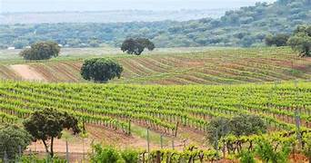
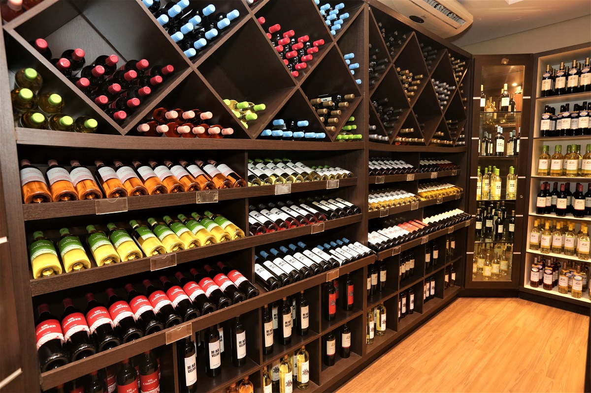

Sobre nós
Onde é produzido
A nossa Vinheria, vinharia Agnelo, iniciou sua atividade na grande São Paulo há mais de 15 anos, contando com apenas uma loja física onde coloca à disposição do mercado uma vasta gama de rótulos de vinícolas nacionais e internacionais.
Um dos pilares do mundo dos vinhos é a hora de escolher qual vinho pegar, que é bastante vasto e diverso. O que torna bastante difícil a tomada de decisão na hora da compra? São cerca de 6.000 variedades de uvas viníferas no mundo, que adquirem características e sabores diferentes de acordo com a região, o clima, o solo e os cuidados em seu cultivo, sem contar com as diferentes técnicas de colheita, fermentação, processamento e armazenagem, que levam à produção de uma infinidade de vinhos capazes de atender aos paladares mais diversos. E aqui na vinharia do Agnelo podemos oferecer uma gigantesca quantidade de vinhos.
Nossa loja
Vinhos Famosos e suas hitórias

O Henriques & Henriques é um dos mais renomados produtores de vinho Madeira, com uma história que remonta a 1850. A vinícola destaca-se por controlar todas as etapas da produção, desde o cultivo das uvas até o engarrafamento, garantindo a qualidade e autenticidade de seus vinhos.
Os vinhos da Henriques & Henriques são conhecidos por sua complexidade, equilíbrio entre doçura e acidez, e longevidade. Eles oferecem uma variedade de estilos, desde os mais secos até os mais doces, utilizando castas tradicionais como Sercial, Verdelho, Bual (Boal) e Malvasia. Temos os Henriques & Henriques medium rich madeira e full rich madeira.

O Mirabilis é um vinho de autor produzido pela Quinta Nova de Nossa Senhora do Carmo, no Douro, e é considerado uma das mais refinadas expressões desse terroir. A versão branca nasce de vinhas muito velhas e castas como Viosinho e Gouveio, resultando num vinho vibrante e profundo.
Já o Mirabilis tinto é feito a partir de vinhas antigas, com castas como Tinta Amarela e outras autóctones do Douro. É um vinho estruturado, com cor intensa e aromas profundos de frutas escuras maduras, especiarias e um leve toque de madeira bem integrada. Na boca, é encorpado, com taninos finos e persistência longa, um vinho que impressiona pela sofisticação e equilíbrio. Temos ambos os vinhos.

O Malhadinha Nova é um vinho de assinatura da Herdade da Malhadinha Nova, no Alentejo, que combina tradição, elegância e um perfil contemporâneo.
O Malhadinha Tinto apresenta um nariz expressivo com notas de frutas pretas e azuis, especiarias e leves tostados. Na boca, é complexo, redondo, com taninos maduros e polidos, e um final longo, demonstrando grande potencial de envelhecimento.
Já o Malhadinha Branco destaca-se por sua frescura e complexidade aromática, com notas de frutas de polpa branca, nuances florais e toques sutis de barrica. Em boca, revela-se equilibrado, volumoso, fresco e elegante, culminando em um final persistente.